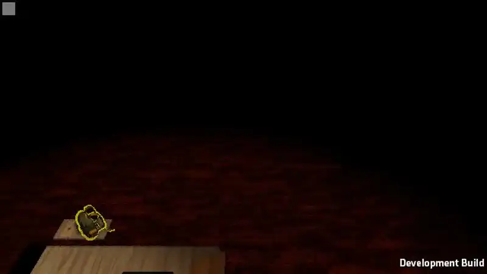
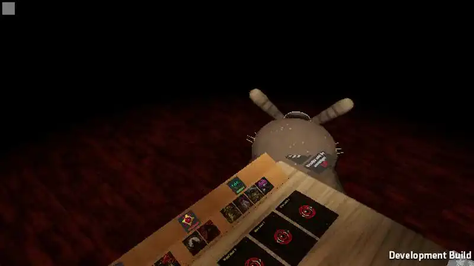
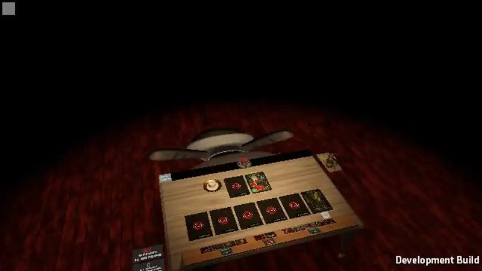
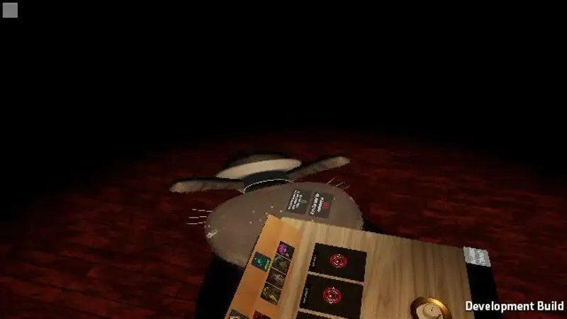

Tes choix codés : E1 il retombe à sa place, S2 le son aspiré, F2 figé une demi-seconde avec la caméra qui se rapproche, Y1 le même plan pour tous ; et ta remarque : la carte après le chat, comme avant, un peu plus vite (0,75 s par mouvement au lieu de 1 s).
Ce sont de vraies parties (autoplay, 3 joueurs en réseau, la Dryade enchaînée), filmées sans le son. Le son aspiré et le « splatch » sont des sons provisoires, à remplacer par de vrais sons.
Caméra en face du chat, la pièce dans le noir et une lumière sur lui. Il s'élève, est lâché, s'écrase à sa place, reste figé une demi-seconde, se relève enchaîné ; coupe sur la table, sa carte se retourne comme avant.

Le même plan : il se voit s'écraser. Le cadrage dépend de sa place à table (ici vu de côté, la table devant).


